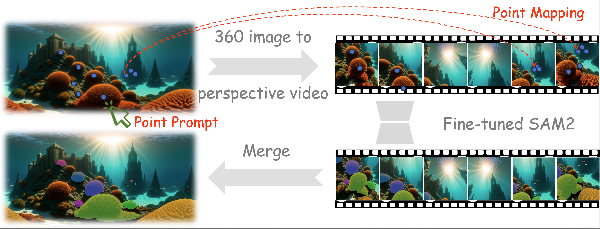

Promptable instance segmentation is widely adopted in embodied and AR systems, yet the performance of foundation models trained on perspective imagery often degrades on 360° panoramas. In this paper, we introduce Segment Any 4K Panorama (SAP), a foundation model for 4K high-resolution panoramic instance-level segmentation.
We reformulate panoramic segmentation as fixed-trajectory perspective video segmentation, decomposing a panorama into overlapping perspective patches sampled along a continuous spherical traversal. This memory-aligned reformulation preserves native 4K resolution while restoring the smooth viewpoint transitions required for stable cross-view propagation.
To enable large-scale supervision, we synthesize 183,440 4K-resolution panoramic images with instance segmentation labels using the InfiniGen engine. Trained under this trajectory-aligned paradigm, SAP generalizes effectively to real-world 360° images, achieving +17.2 zero-shot mIoU gain over vanilla SAM2 of different sizes on real-world 4K panorama benchmark.

The core idea of SAP is to reformulate panoramic segmentation as fixed-trajectory perspective video segmentation. Specifically, we decompose a panorama into overlapping perspective patches sampled along a continuous spherical traversal. This memory-aligned reformulation preserves native 4K resolution while restoring the smooth viewpoint transitions required for stable cross-view propagation, enabling foundation models to perform high-quality instance segmentation on 360° panoramas.